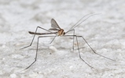
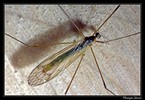
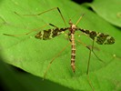
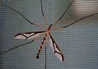
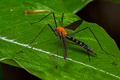
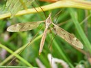
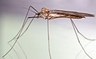
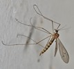
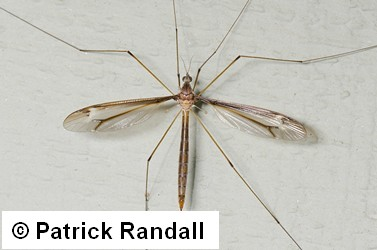
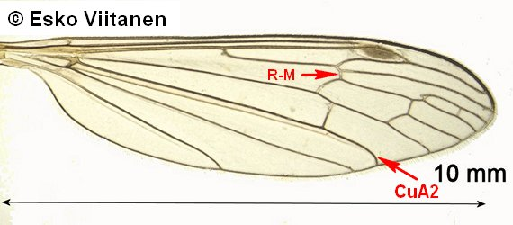

Key to families of Tipulomorpha
1.
- Ocelli present; V-shaped suture incomplete in middle. A2 usually very short and retracted.


Trichoceridae
- Ocelli absent or rudimentary; V-shaped suture complete. A2 usually more than half as long as A1.


2
- Eyes with short ommatrichia between facets.

Pediciidae
- Eyes bare.
3
- Wing well-developed, longer than thorax.

4
- Wing absent or greatly reduced (usually shorter than thorax).

5
- Vein CuA2 strongly bent toward wing margin beyond branch leading to discal cell; vein M1+2 combined,
not branched into M1 and M2; crossvein R-M joining Rs at or before fork. Discal cell usually present. Rostrum not lengthened.
Scl usually terminates freely; Sc-R crossvein present.

Cylindrotomidae
- CuA2 more or less continuing in the same direction beyond fork, or if strongly bent, R-M crossvein joining R4+5 or RS beyond fork,
or fork absent, or veins M1 and M2 separate at wing margin and fused (petiolate) toward discal cell .

5
-Terminal segment of palpus elongate, distinctly longer than the two preceding segments
together. Vein Sc usually ending in R1. Antennae commonly with 13 segments. Rostrum usually distinct.

Tipulidae
- Terminal segment of palpus short. Vein Sc usually ending in costa. Antennae usually with 14 or more segments
(in Hexatoma with fewer than 13 segments). Rostrum usually absent..

Limoniidae